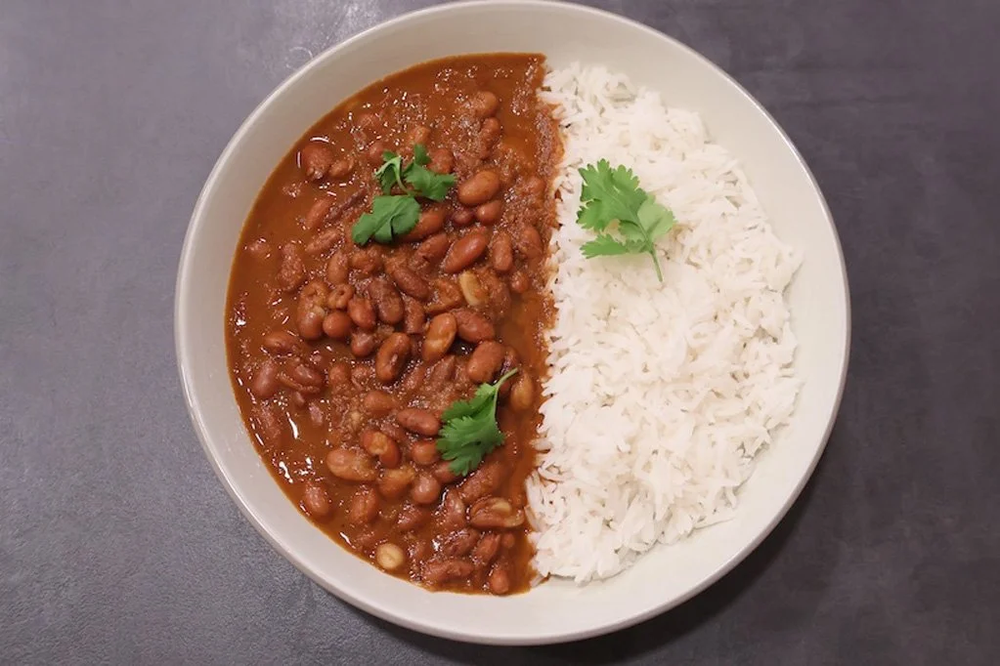

Main Course (Vegan)
Rajma Masala with Rice
3.9 (211 Reviews)
₹250
Rajma Masala with Rice is a soulful North Indian classic that brings comfort to every bite. Slow-cooked kidney beans simmered in a rich, spiced tomato-onion gravy create deep, homely flavors.
Key Ingredients:
Kidney beans, Onion, Tomato, Ginger-garlic paste, Red chili powder, Green chilies, Cumin seeds, Coriander powder, Turmeric powder, Garam masala, Fresh coriander leaves, Kasuri methi, Salt, Basmati rice, Oil.
Quantity: 1 bowl rajma with 1 bowl rice
No. of Orders